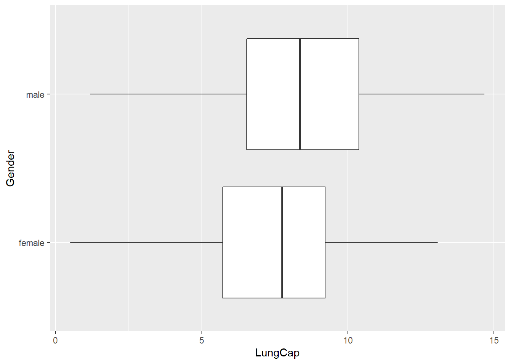
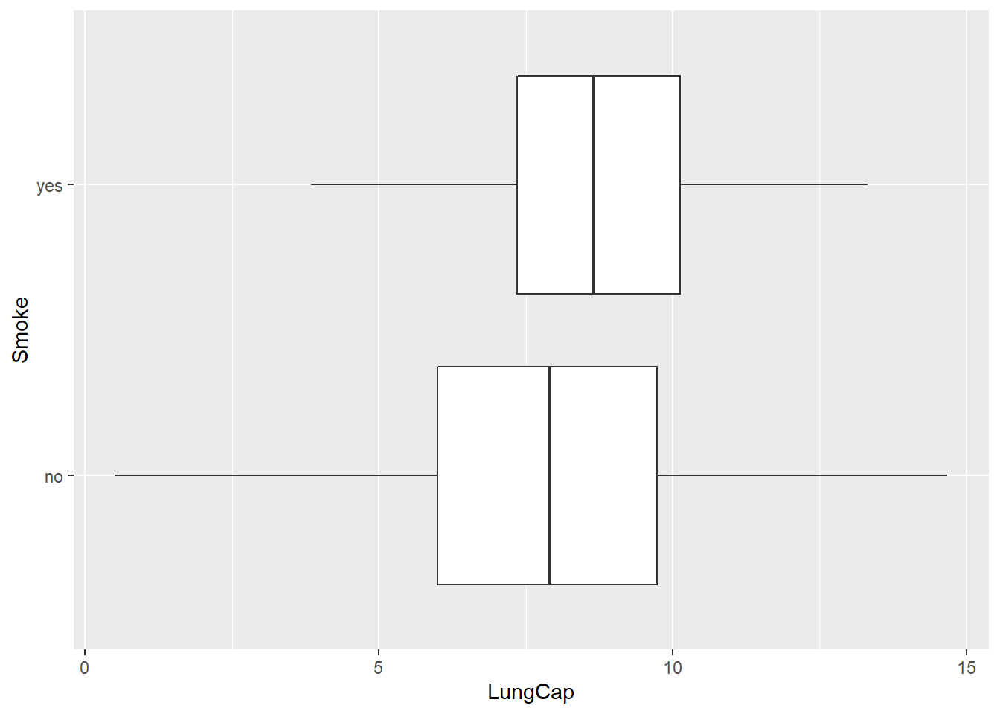
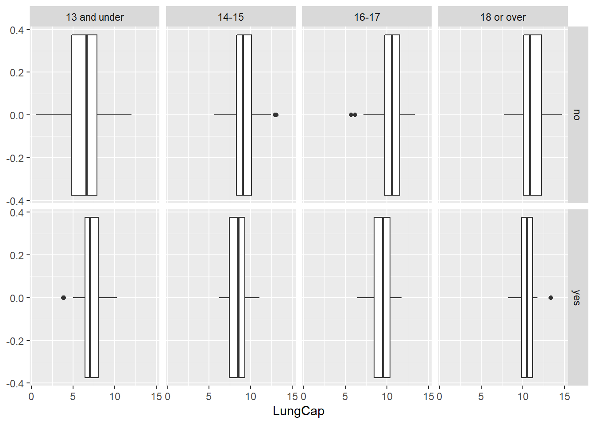

Code
knitr::opts_chunk$set(echo = TRUE, warning=FALSE, message=FALSE)
library(readxl)
library(tidyverse)
library(ggplot2)
library(dplyr)knitr::opts_chunk$set(echo = TRUE, warning=FALSE, message=FALSE)
library(readxl)
library(tidyverse)
library(ggplot2)
library(dplyr)lungcap<-read_excel("_data/LungCapData.xls")
head(lungcap)# A tibble: 6 × 6
LungCap Age Height Smoke Gender Caesarean
<dbl> <dbl> <dbl> <chr> <chr> <chr>
1 6.48 6 62.1 no male no
2 10.1 18 74.7 yes female no
3 9.55 16 69.7 no female yes
4 11.1 14 71 no male no
5 4.8 5 56.9 no male no
6 6.22 11 58.7 no female no #saving a copy of original dataset
lungcap_orig<-lungcap
#checking for missing values in LungCap
which(is.na(lungcap$LungCap))integer(0)The distribution of LungCapData is plotted as a histogram below.
ggplot(lungcap, aes(x=LungCap))+geom_histogram()
The histogram looks approximately normally distributed
The probability distribution of LungCap data for males and females is compared using the boxplots below:
ggplot(lungcap, aes(x=LungCap, y=Gender))+geom_boxplot()
The mean lung capacity of males appears slightly higher than that of females. The IQR and range for males and females appears similarly spread with a higher average for males.
Below the mean and standard deviation of smokers and non-smokers is compared. They are also plotted as a boxplot to help visualize the distribution.
lungcap%>%
group_by(Smoke) %>%
summarize(Mean=mean(LungCap))# A tibble: 2 × 2
Smoke Mean
<chr> <dbl>
1 no 7.77
2 yes 8.65lungcap%>%
group_by(Smoke) %>%
summarize(stdev=sd(LungCap))# A tibble: 2 × 2
Smoke stdev
<chr> <dbl>
1 no 2.73
2 yes 1.88ggplot(lungcap, aes(x=LungCap, y=Smoke))+geom_boxplot()
The mean lung capacity for smokers (8.645) in this sample is higher than that of non-smokers (7.770). This does not make sense. However, the standard deviation of non-smokers (2.726) is much higher than smokers (1.883) so there might be something else going on (see boxplot).
Below, means are taken by age groups of smokers/non-smokers. I also created a new age category variable (“AgeCat”) to plot the data by smoking status and age category.
#Mean under 13 and nonsmoker
lungcap %>%
filter(Age<=13 & Smoke=="no") %>%
pull(LungCap) %>%
mean()[1] 6.358746#Mean under 13 and smoker
lungcap %>%
filter(Age<=13 & Smoke=="yes") %>%
pull(LungCap) %>%
mean()[1] 7.201852#Mean 14-15 and nonsmoker
lungcap %>%
filter(Age==14 | Age==15 & Smoke=="no") %>%
pull(LungCap) %>%
mean()[1] 9.068018#Mean 14-15 and smoker
lungcap %>%
filter(Age==14 | Age==15 & Smoke=="yes") %>%
pull(LungCap) %>%
mean()[1] 8.689231#Mean 16-17 and nonsmoker
lungcap %>%
filter(Age==16 | Age==17 & Smoke=="no") %>%
pull(LungCap) %>%
mean()[1] 10.30523#Mean 16-17 and smoker
lungcap %>%
filter(Age==16 | Age==17 & Smoke=="yes") %>%
pull(LungCap) %>%
mean()[1] 9.850385#Mean over 18 and nonsmoker
lungcap %>%
filter(Age>=18 & Smoke=="no") %>%
pull(LungCap) %>%
mean()[1] 11.06885#Mean over 18 and smoker
lungcap %>%
filter(Age>=18 & Smoke=="yes") %>%
pull(LungCap) %>%
mean()[1] 10.51333#creating new variable AgeCat to create boxplots
lungcap<-lungcap %>%
mutate(AgeCat= as.factor(case_when(Age <= 13 ~ "13 and under",
Age == 14 |Age ==15 ~ "14-15",
Age == 16 | Age==17 ~ "16-17",
Age >= 18 ~ "18 or over"
)))
#new Category AgeCat is the last column
lungcap# A tibble: 725 × 7
LungCap Age Height Smoke Gender Caesarean AgeCat
<dbl> <dbl> <dbl> <chr> <chr> <chr> <fct>
1 6.48 6 62.1 no male no 13 and under
2 10.1 18 74.7 yes female no 18 or over
3 9.55 16 69.7 no female yes 16-17
4 11.1 14 71 no male no 14-15
5 4.8 5 56.9 no male no 13 and under
6 6.22 11 58.7 no female no 13 and under
7 4.95 8 63.3 no male yes 13 and under
8 7.32 11 70.4 no male no 13 and under
9 8.88 15 70.5 no male no 14-15
10 6.8 11 59.2 no male no 13 and under
# … with 715 more rowsggplot(lungcap, aes(x=LungCap))+geom_boxplot()+facet_grid(Smoke ~ AgeCat)
Comparing the lung capacities for smokers and non-smokers in different age categories:
Now we can see that the mean lung capacity for smokers by age group is generally lower than that of nonsmokers. This is true in all categories except for Under 13, which is likely because smokers in that category are going to be older than nonsmokers in that category (i.e. it is more likely that a 12 year old smokes than a 6 year old, and a 12 year old has a larger lung capacity than a 6 year old regardless of smoking status)
This explains the first calculation of mean by smoking status (before finding the mean by age categories). Smokers are generally going to be older than non-smokers for this sample (the oldest participant in the sample is 19- see code below), which explains why the mean for smokers versus non-smokers (not separated by age categories) makes it look like smokers have a higher average lung capacity.
#checking how old participants in the sample are
lungcap %>%
summarize(range(Age))# A tibble: 2 × 1
`range(Age)`
<dbl>
1 3
2 19Calculating the correlation and covariance between Lung Capacity and Age:
#Creating vectors of Age and Lung Capacity from df (lungcap) to apply cov() and cor() functions to
x<-c(lungcap$Age)
y<-c(lungcap$LungCap)
#Calculating covariance
cov(x, y)[1] 8.738289#calculating correlation
cor(x, y)[1] 0.8196749The covariance, 8.738 is fairly high and positive, meaning as age increases, so does lung capacity (i.e. age and lung capacity co-vary). The correlation (0.82) is fairly close to one and positive, indicating they correlate fairly closely.
Prior Conviction Data
#creating a data frame
X<-c(0, 1, 2, 3, 4)
Frequency<-c(128, 434, 160, 64, 24)
prison<- data.frame(X, Frequency)
prison X Frequency
1 0 128
2 1 434
3 2 160
4 3 64
5 4 24prison<-rename(prison, PriorConvictions=X)
prison PriorConvictions Frequency
1 0 128
2 1 434
3 2 160
4 3 64
5 4 24#visualizing df using bar chart
ggplot(prison, aes(x=PriorConvictions, y=Frequency))+geom_bar(stat="identity")+geom_text(aes(label = Frequency), vjust = -.3)#There are 810 obs in df
sum(Frequency)[1] 810Answering the Questions
#creating a vector of probabilities
probs<-Frequency/810
probs[1] 0.15802469 0.53580247 0.19753086 0.07901235 0.02962963#A
# P(x=2)=160/810
160/810[1] 0.1975309#B
#P(x<2)=P(0)+P(1)
(128+434)/810[1] 0.6938272#C
#P(x<=2)=P(0)+P(1)+P(2)
(128+434+160)/810[1] 0.891358#D
#1-P(above)
1-((128+434+160)/810)[1] 0.108642#E
#Expected value=sum of probabilities*each value (0, 1, 2, 3 or 4)
weighted.mean(X, probs)[1] 1.28642#F
#Calculating the Variance using the formula for variance
(sum(Frequency*((X-1.28642)^2)))/(sum(Frequency)-1)[1] 0.8572937#Calculating the sample standard deviation from the variance
sqrt(0.8572937)[1] 0.9259016